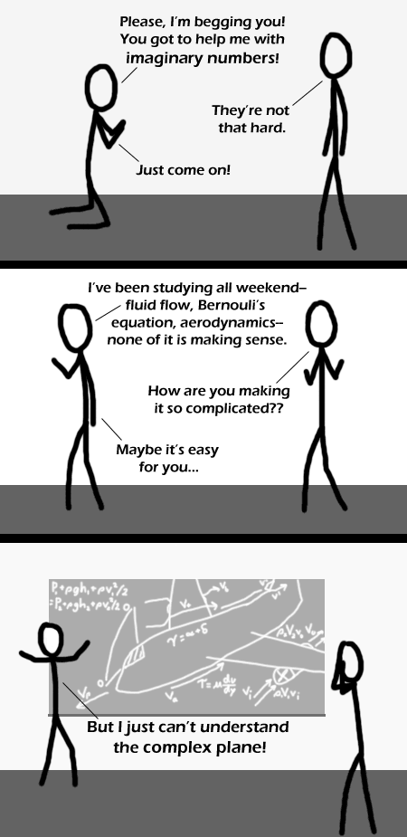

Comic JK 307
When I Feel Like It
⇤
<
?
>
⇥

⇤
<
?
>
⇥
Forum
.
RSS
.
Digg
.
Facebook
.
Reddit
.
Twitter
.
Stumbleupon
Enter your thoughts on number 307 here. Please, no spamming, trolling, or phreaking. *groan* bad pun... Might try this at my next flight dynamics supervision with your mom blaargag No one will ever help your mom again Can your mom distinguish between sticks better? Give one a hat, your mom's never been done before. . . Your mom is pretty continuous, as are the positions Your mom does when viewpoint isn't obvious from what someone says. Guy on left is asking your mom questions. Guy on right is saying your mom's easy. I see no problem here with your mom. OK, the mom puns have to stop. >agreed. mom pun jokes are the *worst* type of joke. >>I CONCUR >>>Some people just don't have the capacitor for your mom's nerd puns. >>>>Why don't we add a filter that only allows posts if there are no instances of your mom mentioned? >>>>>if you have not noticed, whenever you add a filter for any given word, it just get turned into l337sp34k (or acronyms) your mom -> y0r //�// better? no. Nah, MOM PUNS RULE! <-- Because typing in caps makes my mom right... "Is that left?" - "That's right on your mom!" -- "But I thought you said she was left?" --- "No, she was right, that's why she was left." I think I found your mom more funny than I should have... but I seem to be like that with a lot of moms. Awesome joke as someone finishing up his senior design in aerospace engineering this week it made my day. I'm pretty familiar with complex your mom's frequency analysis within electrical/computer stuff, but I have no idea what your mom uses the concept for. We also do frequency analysis for things such as flight controls and your mom's static/dynamic stability. I AM your mom! And your mom RULES! ...ok, someone put "your mom" into everything here... which doesn't make sense since "mom" isn't a word. ("mum" is however...)